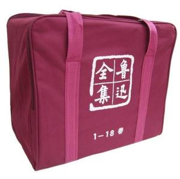

shouting
was published by Beijing trendy society in August 1923.
hesitation, August 1926, Beijing beixin book company
new stories, 1936, Shanghai cultural life publishing house
miscellaneous collectionThe unpublished essays created by Lu Xun during his lifetime were compiled and published by Cai Yuanpei, Xu Guangping, etc. and incorporated into the first edition of Lu Xun's complete works after his death. However, time was too short to avoid leaving pearls behind. In 1948 and 1952, Tang Tao compiled and published "Addendum to Lu Xun's Complete Works" and "Addendum to Lu Xun's Complete Works". These articles were later incorporated into various editions of Lu Xun's complete works in different classifications. In these complete works, the total collection of these articles was given many titles. The following are all named after "Complete Works of Lu Xun" published by People's Literature Publishing House in 2005.
 The Complete Works of Lu Xun's Essays《grave》 March 1927, anonymous club
《hot wind》 In November 1925, Beijing beixin book company
《canopy collection》 In August 1926, Beijing beixin book company
《huagai collection sequel》 In may 1927, Beijing beixin book company
《the sequel》 In 1948, Shanghai publishing company
《just a collection》 In October 1928, Shanghai beixin book company
《three leisure sets》 In September 1932, Shanghai beixin book company
《south chamber and north assembly》 In April 1934, Shanghai Tongwen Bookstore
《er Xin Ji》 In 1932, Shanghai United Bookstore
《lace literature》 In June 1936, Shanghai lianhua bookstore
《pseudo-freedom book》 In October 1933, Shanghai Qingguang Book Company
《quasi-romantic talk》 In December 1934, Shanghai lianhua bookstore
《and Jieting essays》 July 1937, Shanghai sanxian bookstore
《and interface pavilion essays 2 sets》 July 1937, Shanghai sanxian bookstore
《and jieting essays at the end of the series》 July 1937, Shanghai sanxian bookstore
《outside the collection》 In may 1935, Shanghai mass book company
《gleaning of collections outside collections》 In 1938, Lu Xun complete works publishing house
《supplement to supplements to collections outside collections》 In 1952, Shanghai publishing company
a booklet of Lu Xun's translated works《translation under the wall》 In April 1929, Shanghai beixin book company
《collection of modern Japanese novels》 In June 1923, Shanghai commercial press
《problems in modern new literature》 In April 1929, Shanghai dajiang book shop
《peach clouds》 July 1923, Beijing trendy club
《on art》 In June 1929, Shanghai dajiang book shop
《symbol of anguish》 In December 1924, Beijing anonymous club
《literature and criticism》 In June 1929, Shanghai Shuimo Bookstore
《out of the ivory tower》 In December 1925, Beijing anonymous club
《travel on the moon》 In 1903, Japan's tokyo evolutionary society
《little John》 In January 1928, Beijing anonymous club
《worker sui Hui slightly husband》 In may 1922, Shanghai commercial press
《thoughts, mountains and waters, characters》 In may 1928, beixin book company
《modern novels cluster translation》 In July 1922, Shanghai commercial press
《on the tide of modern art history》 In 1929, beixin book company
《B·R·Epomehk Fairy Tales》 In July 1922, Shanghai commercial press
《little Peter》 In November 1929, Shanghai spring tide book company
《literary policy》 In June 1930, Shanghai Shuimo Bookstore
《on art》 July 1930, Shanghai Guanghua bookstore
《destruction》 In September 1931, Shanghai dajiang book shop
《harp》 In January 1933, Shanghai liangyou book company
《October》 February 1933, Shanghai shenzhou national light society
《one day's work》 In March 1933, Shanghai liangyou book company
《table》 July 1935, Shanghai cultural life bookstore
《Russian fairy tales》 In August 1935, Shanghai cultural life bookstore
《dead souls》 In 1938, Shanghai cultural life publishing house
《bad children and other anecdotes》 In June 1936, Shanghai lianhua book company
《medicinal plants and others》 In June 1936, Shanghai commercial press
《mountaineers singing》 In 1938, Lu Xun complete works publishing house
《supplement to translation》 In March 2008, Fujian education press
《underground travel》 In March 1906, Shanghai universal publishing house and Nanjing kai Xin publishing house
《collection of foreign novels》 In March 1909, the first book was published. In July 1909, the second volume of the book was compiled and translated by the Zhou brothers and published in Zhou Shuren. The publishing house is unknown
Lu Xun's academic monograph《a brief history of Chinese novels》 December 1923, the first volume; In June 1924, the second volume, Peking university trendy press
《outline of the history of Chinese literature》 In 1938, Lu Xun complete works publishing house, Lu Xun complete works Committee compiled
《historical changes in Chinese novels》 In 1938, Lu Xun complete works publishing house, Lu Xun complete works Committee compiled
a collection of Lu Xun's other works《weeds》 In July 1927, Beijing Xinchao Society A collection of prose poems
《picking up flowers at night》 In September 1928, Beiping Unnamed Society Essay collection
《preface and postscript to ancient books》 In 1938, Lu Xun Complete Works Publishing House Lu Xun's Complete Works Committee Collated and Compounded
《preface and postscript to translation》 In 1938, Lu Xun Complete Works Publishing House Lu Xun's Complete Works Committee Collated and Compounded
《the book of the two places》 In 1933, Shanghai Qingguang Book Company Letter Collection of Lu Xun and Xu Guangping
《Lu Xun's book brief》 In 1937, Sanxian Bookstore Xu Guangping finishing
《Lu Xun's diary》 In 1951, Shanghai Publishing Company Xu Guangping finishing